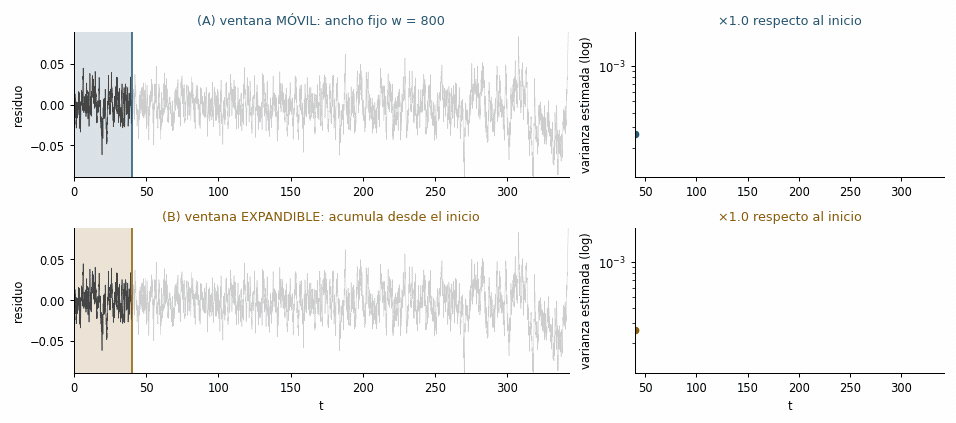

EWS univariadas en la práctica
Objetivos de aprendizaje
- Estimar varianza y autocorrelación en ventanas móviles sobre una serie real o simulada.
- Distinguir ventana móvil de ventana expandible, implementar ambas y saber cuándo falla cada una.
- Aplicar detrending y cuantificar la tendencia del indicador con el \(\tau\) de Kendall.
- Reportar sensibilidad al tamaño de ventana y conocer la lógica de los surrogates.
- Reproducir todo el flujo con
ewstoolsen tu propia máquina.
1 Un sistema que deriva hacia el pliegue
A diferencia del capítulo anterior (donde fijábamos \(\lambda\)), ahora el parámetro de control cambia lentamente y empuja al sistema hacia una saddle-node. Simulamos el doble pozo con forzamiento creciente, detenemos en la transición y calculamos las EWS sobre el tramo pre-transición:
Ambos indicadores tienden a subir antes del salto, y el \(\tau\) de Kendall (cercano a \(+1\)) lo confirma como una tendencia monótona creciente: la huella estadística de la ralentización crítica.
NotaUn detalle que sí importa: cómo se quita la tendencia
El detrending aquí es un filtro gaussiano (gaussian_filter1d), no una media móvil con np.convolve(..., mode="same"). La diferencia no es cosmética: la convolución en modo same divide entre el ancho completo de la ventana también en los extremos, donde hay menos puntos, así que subestima la tendencia al principio y al final de la serie y deja residuos artificialmente grandes justo donde vamos a buscar la señal. Con mode="nearest" el filtro extiende la serie con su valor de borde y ese sesgo desaparece. Es exactamente el tipo de decisión de preprocesamiento que hay que reportar y someter a análisis de sensibilidad (Alvarez-Martinez y Miramontes 2026, sec. 3.1.4).
2 Ventana móvil y ventana expandible
Todo indicador EWS se calcula re-estimando un estadístico sobre segmentos sucesivos de la serie. Hay dos maneras de elegir esos segmentos, y no son equivalentes (Alvarez-Martinez y Miramontes 2026, sec. 3.1.1):
- Ventana móvil (deslizante, rolling). Se fija un ancho \(w\) y se desliza: en cada tiempo \(t\) el indicador se calcula con \(\{x_{t-w+1},\dots,x_t\}\). Imita el monitoreo prospectivo en tiempo real: solo usa las \(w\) observaciones más recientes y descarta las viejas, que pueden pertenecer a otro régimen dinámico.
- Ventana expandible (acumulativa, expanding). La ventana crece: el indicador en \(t\) se calcula con \(\{x_1,\dots,x_t\}\) (o desde un punto fijo tras un periodo de calentamiento). Al acumular más datos, reduce la varianza del estimador y da curvas más estables, sobre todo al principio del monitoreo, cuando una ventana móvil tendría muy pocos puntos.
El precio de la ventana expandible es serio: si el sistema pasa por fases (una meseta estable larga y luego un forzamiento tardío), las observaciones antiguas diluyen la aceleración reciente del indicador y pueden enmascararla por completo.

Figura 4. Las dos estrategias de ventana sobre la misma serie. Arriba: ventana móvil de ancho fijo \(w\). Abajo: ventana expandible que acumula desde el inicio. A la derecha, el indicador (varianza, escala logarítmica) que produce cada una, con la amplificación respecto a su valor inicial. Reconstrucción de la figura 3 de Alvarez-Martinez y Miramontes (2026).
Vamos a medirlo. El escenario es multifase, que es el caso realista y el que separa a las dos estrategias: el sistema pasa el primer 35 % del tiempo con el parámetro quieto y solo después empieza la rampa hacia el pliegue.
El resultado es el que hay que retener: el \(\tau\) de Kendall no distingue las dos ventanas —puede incluso salir más alto en la expandible— pero la sensibilidad sí las distingue. La varianza en ventana móvil se multiplica por ~5 desde el inicio hasta el borde de la transición; la expandible, apenas por ~1.7 (prueba también la pestaña de R: los números cambian con la realización, la conclusión no). Como el \(\tau\) solo mide monotonía, premia a la curva expandible por ser suave y no penaliza que haya diluido la aceleración tardía. Dos lecciones:
- Nunca resumas un indicador solo con \(\tau\). Reporta también la magnitud del cambio y mira la curva.
- Para detectar una transición inminente, la ventana móvil suele ganar (Alvarez-Martinez y Miramontes 2026, sec. 3.1.1). La expandible es útil para estimar un nivel de base estable al inicio del monitoreo, o combinada con pesos que favorezcan lo reciente.
NotaEl traslape entre ventanas y el número de puntos independientes Avanzado
Arriba avanzamos la ventana de un punto en un punto: traslape máximo. Eso da la curva más suave y la mejor resolución temporal, pero introduce una autocorrelación fortísima en la serie del indicador, que viola el supuesto de independencia de las pruebas de tendencia e infla la significancia (Alvarez-Martinez y Miramontes 2026, sec. 3.1.2). Ventanas sin traslape eliminan ese problema pero dejan poquísimos puntos. El compromiso habitual es avanzar \(w/4\) o \(w/2\):
Y ojo con la convención de fijar \(w = N/2\): con series cortas y paso \(w/2\) quedan dos o tres ventanas, con las que ninguna prueba de tendencia tiene poder estadístico.
3 Cuánta ventana es suficiente: análisis de sensibilidad
No existe un \(w\) correcto. La guía empírica es que \(w\) debe ser grande para estimar bien varianza o autocorrelación (al menos 30–50 observaciones) y pequeño frente a la escala de tiempo de la transición hipotética. Por eso la buena práctica no es elegir un \(w\) y callar, sino barrer un rango y reportar el resultado completo (Alvarez-Martinez y Miramontes 2026, sec. 3.2.3; Dakos et al. 2012):
Si el signo y el orden de magnitud del \(\tau\) sobreviven al barrido, la señal es robusta. Si aparecen y desaparecen según la ventana, lo honesto es decirlo.
4 Buenas prácticas y trampas
- Detrending. Hay que separar la deriva lenta de las fluctuaciones. Filtro gaussiano, LOESS o media móvil son habituales; la elección afecta el resultado (Dakos et al. 2012). El ancho de banda debe quitar tendencia y estacionalidad sin borrar las fluctuaciones de alta frecuencia que llevan la señal. La primera diferencia (\(\Delta x_t\)) elimina tendencias lineales pero distorsiona la autocorrelación, así que es mala idea aquí (Alvarez-Martinez y Miramontes 2026, sec. 3.1.4).
- Estacionalidad. Con datos estacionales (casi todo dato ecológico de campo), hay que desestacionalizar antes: descomposición clásica, STL, o modelos de espacio de estados.
- Tamaño y tipo de ventana. Ver Sección 2 y Sección 3: reporta el barrido, no un solo número.
- Indicadores complementarios. La asimetría (skewness) y la curtosis suelen crecer al deformarse el pozo; el espectro se enrojece (más potencia en bajas frecuencias); el flickering y la bimodalidad aparecen en sistemas biestables cerca del pliegue. Ninguno es informativo en todos los mecanismos: flickering y bimodalidad solo tienen sentido bajo B-tipping, mientras que el enrojecimiento espectral puede aparecer por variabilidad ambiental creciente sin bifurcación alguna (Alvarez-Martinez y Miramontes 2026, sec. 2.4).
- Significancia con surrogates. Para decidir si una tendencia es real, se compara contra series subrogadas (p. ej. con la misma autocorrelación o el mismo espectro, pero con la estructura temporal destruida) y se construye una distribución nula del \(\tau\).
- Sesgo retrospectivo. Si solo analizas series que ya sabes que terminaron en transición, los indicadores tienden a salir positivos aunque no haya habido pérdida de resiliencia: es sesgo de muestreo condicional. Estimar la tasa de falsos positivos exige mirar también sistemas que no transitaron (Alvarez-Martinez y Miramontes 2026, sec. 3.2.2; Boettiger y Hastings 2012).
NotaEn tu máquina:
ewstools (Python) y EWSmethods (R)
En el navegador computamos las EWS “a mano” para que se vea la mecánica. En un flujo real conviene usar bibliotecas dedicadas. Este bloque no se ejecuta aquí; cópialo a tu entorno local (versión completa en el apéndice B):
# Python (local): pip install ewstools
import numpy as np, pandas as pd, ewstools
ts = ewstools.TimeSeries(data=pre) # pre = tramo anterior a la transición
ts.detrend(method="Gaussian", bandwidth=0.2) # bandwidth como fracción de la serie
ts.compute_var(rolling_window=0.25) # 0.25 = w es el 25 % de la serie
ts.compute_auto(rolling_window=0.25, lag=1)
ts.compute_skew(rolling_window=0.25)
ts.compute_ktau()
print(ts.ktau) # {'variance': .., 'ac1': .., 'skew': ..}
ts.make_plotly().show() # figura interactiva
# ewstools SOLO implementa ventana móvil. La expandible se obtiene en una línea
# sobre los mismos residuos que ya calculó:
res = ts.state["residuals"]
var_expandible = res.expanding(min_periods=int(0.25*len(res))).var()
ac_expandible = res.expanding(min_periods=int(0.25*len(res))).apply(
lambda s: pd.Series(s).autocorr(lag=1), raw=False)# R (local)
library(EWSmethods)
res <- uniEWS(data = cbind(tiempo, serie), metrics = c("SD","ar1","skew"),
method = "rolling", winsize = 50) # winsize en % de la serie
plot(res)5 Ejercicios
TipEjercicio 7.1 — Sensibilidad a la ventana
Cambia w a 400 y luego a 1500 en la primera celda. ¿Cómo afectan el ruido del indicador y el valor del \(\tau\) de Kendall? Compara con la tabla de Sección 3.
NotaSolución
Con w=400 las curvas de varianza/AC son más ruidosas y el \(\tau\) puede bajar; con w=1500 son más suaves pero la señal aparece más tarde y se pierde resolución cerca de la transición. No hay ventana “correcta”: por eso se reporta el barrido completo.
TipEjercicio 7.2 — ¿Y si no hay transición?
Pon sigma=0.04 y h = np.linspace(-0.2, 0.2, n) (la rampa no alcanza el pliegue) en la primera celda. ¿Siguen subiendo los indicadores? ¿Qué dice esto sobre falsos positivos?
NotaSolución
Sin acercarse al pliegue, varianza y AC(1) se mantienen aproximadamente planas y el \(\tau\) ronda 0. Esto ilustra que una tendencia creciente es la señal informativa; observar valores altos pero estables no implica transición inminente (cuidado con los falsos positivos, Boettiger y Hastings (2012)).
TipEjercicio 7.3 — Meseta más larga, dilución mayor
En la celda de Sección 2 cambia la meseta de .35 a .15 y luego a .60 (la fracción de la serie con el parámetro quieto). Anota la amplificación de la varianza con cada ventana. ¿Qué le pasa a la ventaja de la ventana móvil?
NotaSolución
Cuanto más larga la meseta, más datos “de régimen estable” acumula la ventana expandible y más diluye el ascenso final: su amplificación se acerca a 1 mientras la de la móvil se mantiene. Con meseta corta (.15) las dos estrategias casi coinciden, porque casi toda la serie pertenece ya a la fase de aproximación. La ventaja de la móvil crece exactamente con el grado de no monotonía del cambio.
TipEjercicio 7.4 — Ruido creciente, falso positivo garantizado
Modifica la serie multifase para que \(h\) no cambie (h = np.full(n, -0.2)) pero \(\sigma\) crezca linealmente de 0.02 a 0.06 (usa sig = np.linspace(0.02, 0.06, n) dentro del bucle). Calcula el \(\tau\) de la varianza y de la AC(1) en ventana móvil. ¿Cuál de los dos indicadores te engaña?
NotaSolución
La varianza sube con fuerza y da un \(\tau\) claramente positivo: es el falso positivo por ruido creciente (Alvarez-Martinez y Miramontes 2026, sec. 2.6.2). La AC(1) se mantiene aproximadamente plana, porque \(\rho_1 = e^{-\lambda \Delta t}\) no depende de \(\sigma\): la tasa de retorno no cambió. Ese contraste es un diagnóstico útil en la práctica: una varianza que sube sin que suba la autocorrelación apunta a variabilidad externa creciente, no a pérdida de resiliencia.
6 Para seguir
El capítulo 8 generaliza a sistemas con muchas variables y presenta los enfoques de aprendizaje automático.
Referencias
Alvarez-Martinez, Roberto, y Pedro Miramontes. 2026. «Early Warning Signals in Ecological Time-Series». Entropy 28 (6): 628. https://doi.org/10.3390/e28060628.
Boettiger, Carl, y Alan Hastings. 2012. «Quantifying Limits to Detection of Early Warning for Critical Transitions». Journal of the Royal Society Interface 9 (75): 2527-39. https://doi.org/10.1098/rsif.2012.0125.
Dakos, Vasilis, Egbert H. van Nes, Paolo D’Odorico, y Marten Scheffer. 2012. «Robustness of Variance and Autocorrelation as Indicators of Critical Slowing Down». Ecology 93 (2): 264-71. https://doi.org/10.1890/11-0889.1.